Viscraft is an AI-powered product ad photography generator. It is designed for small business owners, marketers, and entrepreneurs who need professional-looking product photos without the cost of a photographer or studio.
The core workflow is simple: describe your product, choose a visual style (background, lighting, mood, camera angle, and props), preview the assembled prompt, and generate a studio-quality ad shot. The AI handles the rest. Results are saved in a persistent gallery organized by campaign, and any shot can be regenerated with a tweaked prompt at any time.
./logs/app-YYYY-MM-DD.log alongside stdout output.The following steps walk through the complete user journey from first visit to generating and managing ad shots.
The user arrives at the Viscraft landing page. It introduces the product value proposition and provides Register and Login buttons to enter the workspace.
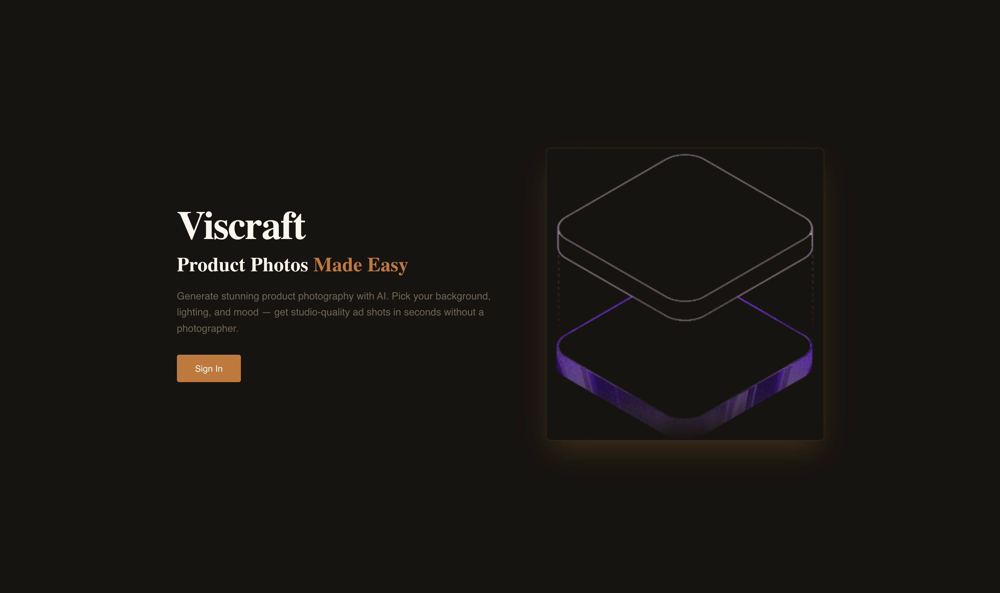
New users create an account by entering their email, a password (min 8 characters), and an optional display name. On success, a JWT token is issued and the user is redirected to the workspace.
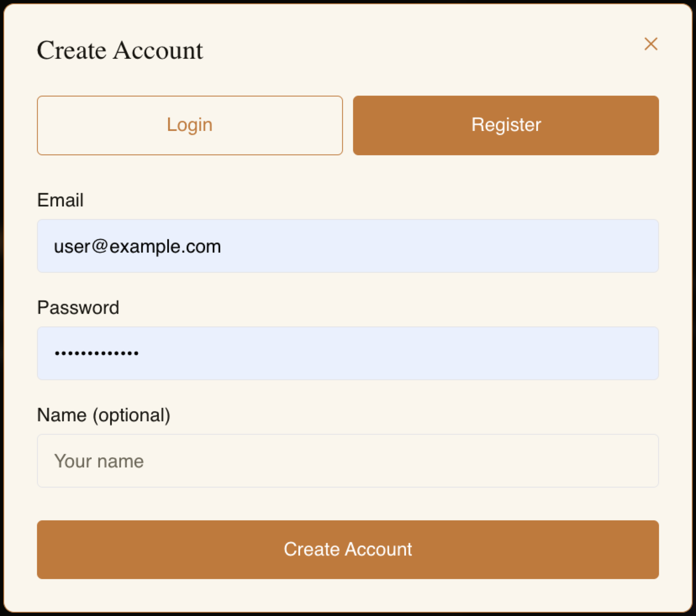
Returning users log in with their email and password. The token is persisted to localStorage via Zustand's authStore, so the session survives page refreshes.
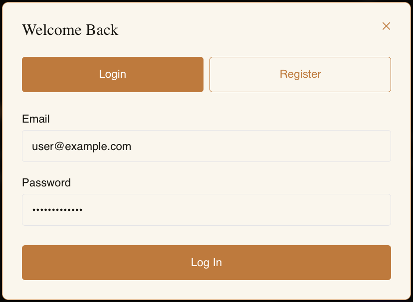
The main workspace consists of a sidebar listing all campaigns and a main area showing the ad shot gallery for the selected campaign. A sample campaign is auto-created for new users so the workspace is never empty on first login.
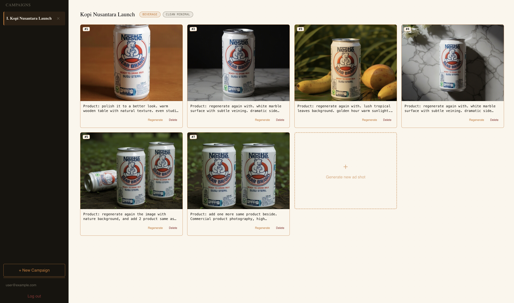
Users create a new campaign by entering a name and optionally a description, product category, and visual style. Campaigns act as folders for organizing ad shots by product or project.
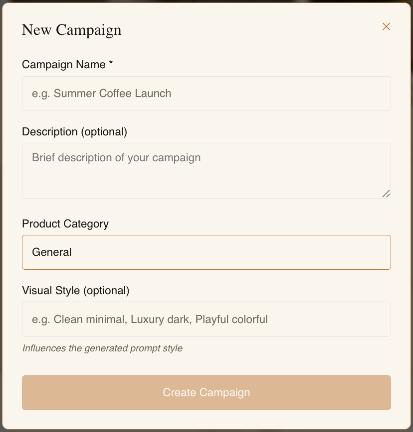
The generate form lets users describe their product in plain text, then select styling options (background, lighting, mood, camera angle, props). The assembled prompt is shown in a live preview pane before submitting. Users may also upload a reference photo for image-editing mode.
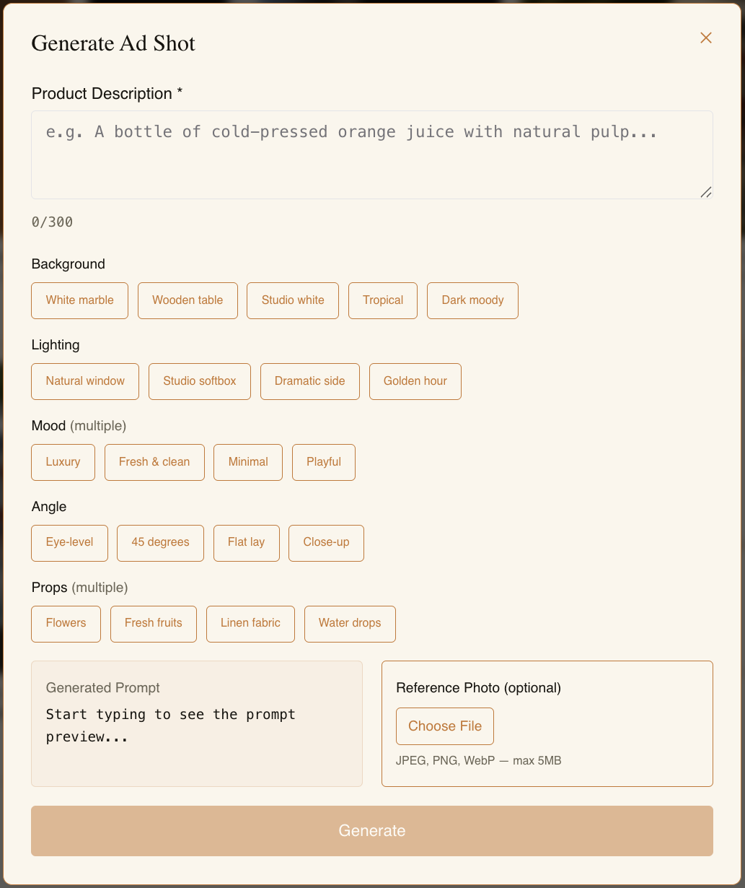
Clicking any ad shot in the gallery opens a full-size detail modal. From here the user can view the original and generated prompts, download the image, regenerate with a new prompt, or delete the shot.
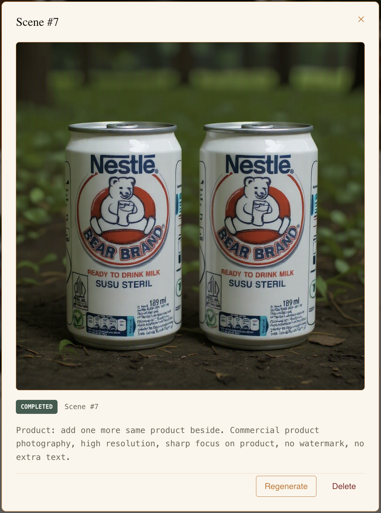
The regenerate flow re-opens the generate form with the original prompt pre-filled. The original image is automatically shown as a reference photo in image-editing mode, allowing the user to nudge the result without starting from scratch.
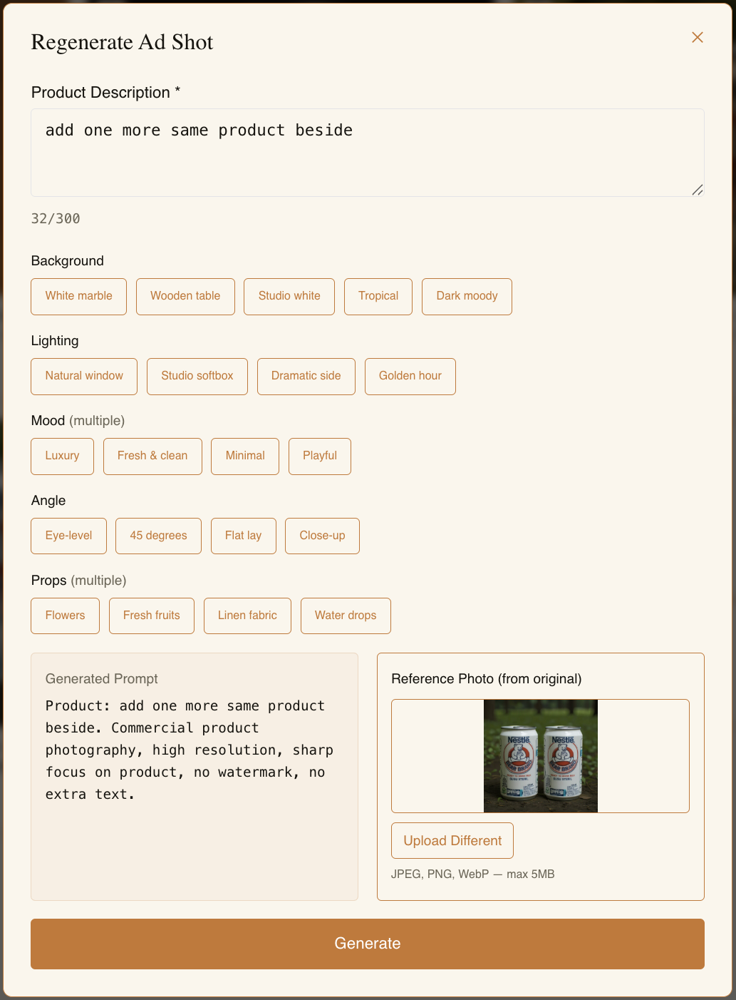
Deleting an ad shot requires explicit confirmation through a modal to prevent accidental data loss. Campaign deletion follows the same pattern and also cascades to all contained ad shots.
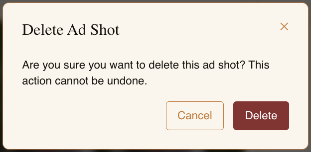
First-time users see a 3-step guided tour that highlights the campaign sidebar, generate form, and prompt preview — the three core interaction areas of the workspace.
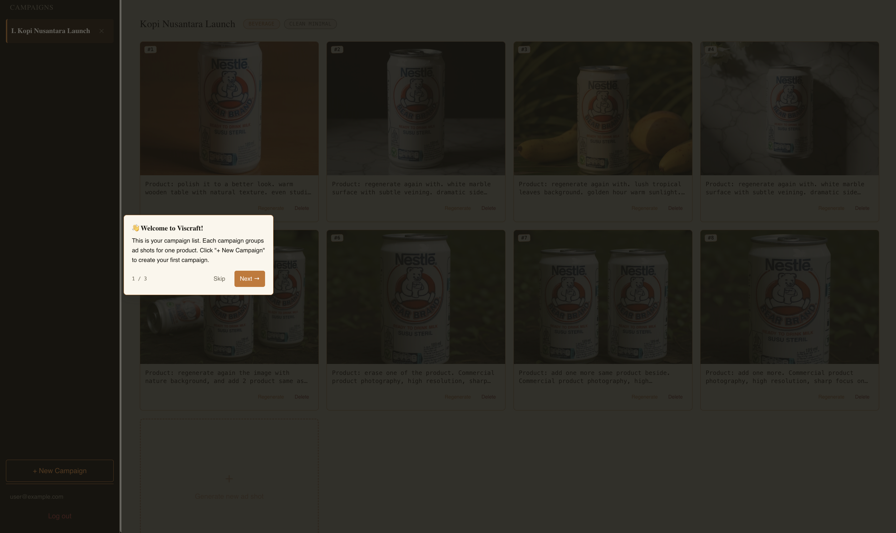
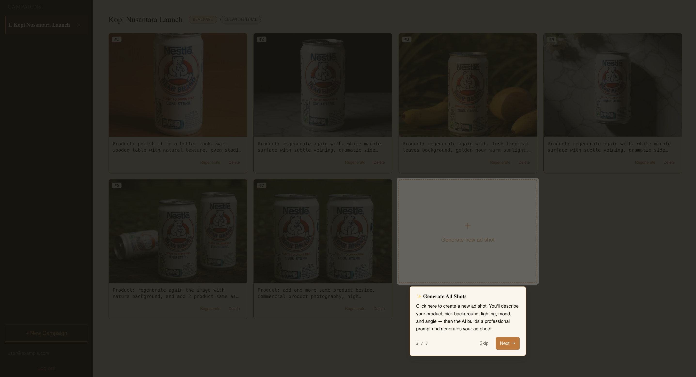
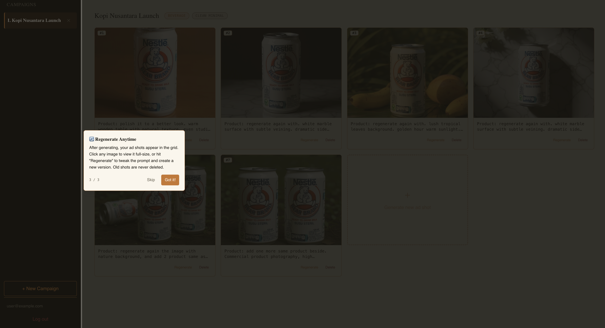
Raw product descriptions typed by users ("A bottle of cold brew coffee") produce inconsistent AI results on their own. The buildPrompt() function on the frontend assembles a structured prompt that reliably yields commercial-quality product photography.
The function combines the user's product description with the promptValue of each selected styling option, separated into logical sections, and appends a fixed commercial photography suffix.
| Field | Value |
|---|---|
| Product Description | A bottle of cold brew coffee |
| Background | White Marble → white marble surface with subtle veining |
| Lighting | Natural Window → soft natural window light from left |
| Mood | Fresh & Clean → fresh clean aesthetic, bright and airy |
| Angle | 45 Degrees → 45-degree angle shot |
Product: A bottle of cold brew coffee. white marble surface with subtle veining. soft natural window light from left. fresh clean aesthetic, bright and airy. 45-degree angle shot. Commercial product photography, high resolution, sharp focus on product, no watermark, no extra text.
Both the raw user input (user_prompt) and the assembled prompt (generated_prompt) are stored in the database. The generated_prompt is what actually gets sent to the Pollinations API. This separation preserves the user's original intent for the regenerate flow while giving the AI enough context to produce quality results.
nude, explicit, nsfw, gore (case-insensitive)sceneService.validatePrompt() — the frontend character counter is informational onlyThe application handles three categories of visible failure states, each rendered differently in the UI.
When a generation fails asynchronously, the skeleton polling card resolves into an error card in the gallery. The error card displays the failure reason and an option to retry.
| Error Code | Cause | UI Message |
|---|---|---|
| ERR_03 | Pollinations API did not respond within 60–90 seconds | "Generation timed out. The AI took too long to respond." |
| ERR_05 | Pollinations returned an empty or unparseable response | "Generation failed. The AI returned an unexpected response." |
| ERR_13 | Prompt was rejected by the AI content safety filter | "Content policy violation. Please revise your prompt." |
Validation errors from the server (ERR_04, ERR_11) are shown inline in the generate modal above the form fields. The submit button is also disabled client-side if the prompt is empty.
When the rate limit is hit (ERR_02), the modal displays a dismissable error banner: "Too many requests. Please wait a moment before generating again."
The Axios JWT interceptor handles 401 responses globally — on token expiry, the user is logged out and redirected to the landing page. Generic network errors are shown via the ErrorBanner component at the top of the workspace.
cd viscraft-backend # Copy and fill environment variables cp .env.example .env
Edit .env with your values:
| Variable | Description |
|---|---|
| DB_HOST | PostgreSQL host (e.g. localhost) |
| DB_PORT | PostgreSQL port (default: 5432) |
| DB_NAME | Database name |
| DB_USER | Database user |
| DB_PASSWORD | Database password |
| JWT_SECRET | Random secret string for signing tokens |
| POLLINATIONS_API_KEY | Your Pollinations.ai API key |
| APP_PORT | Server port (default: 8089) |
| STORAGE_PATH | Path for storing generated images (default: ./storage/images) |
| STORAGE_PUBLIC_URL | Public URL prefix for image files (e.g. http://localhost:8089/storage/images) |
# Install Go dependencies go mod download # Run database migrations in order (001 through 005) psql -h $DB_HOST -U $DB_USER -d $DB_NAME -f migrations/001_init.sql psql -h $DB_HOST -U $DB_USER -d $DB_NAME -f migrations/002_add_used_reference_image.sql psql -h $DB_HOST -U $DB_USER -d $DB_NAME -f migrations/003_scenes.sql psql -h $DB_HOST -U $DB_USER -d $DB_NAME -f migrations/004_product_ad_pivot.sql psql -h $DB_HOST -U $DB_USER -d $DB_NAME -f migrations/005_drop_reference_scene_fkey.sql # Start the server go run main.go # Server starts on http://localhost:8089
cd viscraft-frontend # Install Node dependencies npm install # Copy and fill environment variables cp .env.example .env
Edit .env:
| Variable | Value |
|---|---|
| VITE_API_BASE_URL | http://localhost:8089 |
# Start the development server npm run dev # App runs on http://localhost:5173
http://localhost:5173.